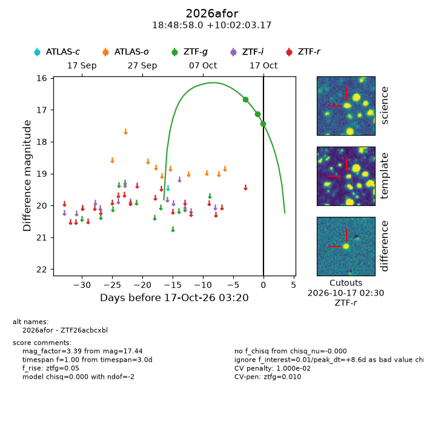
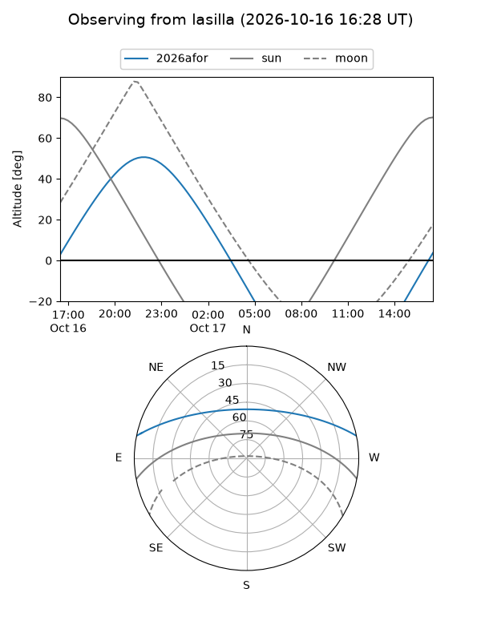
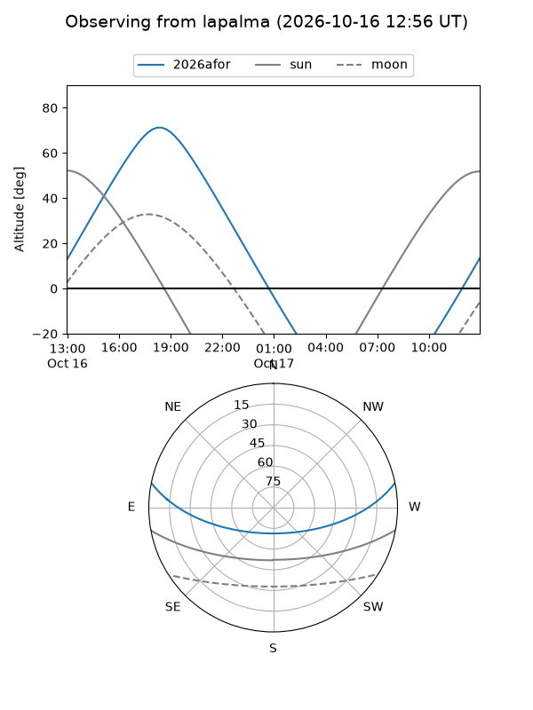
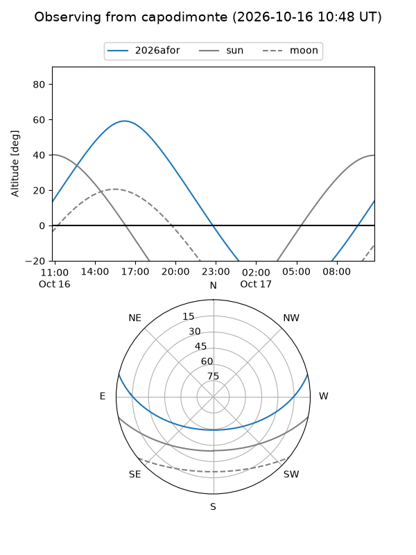
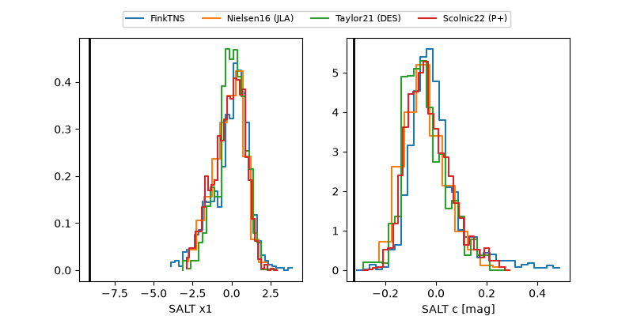

2026afor
Target 2026afor at 2026-10-17 03:21
Aliases and brokers:
FINK-ZTF: ztf.fink-portal.org/ZTF26acbcxbl
Lasair-ZTF: lasair-ztf.lsst.ac.uk/objects/ZTF26acbcxbl
ALeRCE-ZTF: alerce.online/object/ZTF26acbcxbl
YSE-PZ: ziggy.ucolick.org/yse/transient_detail/2026afor
TNS name: wis-tns.org/object/2026afor
Direct TNS query: direct search
alt names
ZTF26acbcxbl (ztf,fink_ztf)
2026afor (tns,yse)
Coordinates:
equatorial (ra, dec) = 282.2416,+10.03421
equatorial (HMS+DMS) = 18:48:57.99,+10:02:03.17
galactic (l, b) = (41.6066,+5.10029)
Flags:
peak dt: +8.6
likely cv: !!
CV pen: 0.01
Photometry:
last ztfg=17.44
3 ztfg detections
Lightcurve

Visibility



Additional plots
